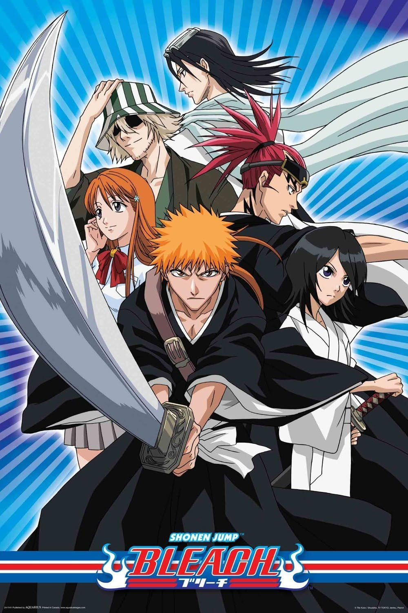
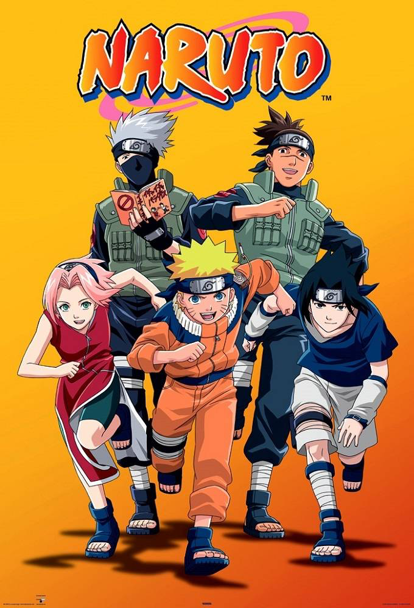

Fanmous Animes

One Piece
One Piece follows Monkey D. Luffy and his pirate crew as they sail the Grand Line in search of the legendary treasure known as the One Piece.

Bleach
Bleach follows Ichigo Kurosaki, a teenager who gains the powers of a Soul Reaper and is tasked with protecting the living world from evil spirits called Hollows.

Naruto
Naruto follows Naruto Uzumaki, a young ninja striving to earn recognition and become the Hokage, the strongest leader of his village.

Death Note
A genius student discovers a supernatural notebook that lets him kill anyone by writing their name, sparking a deadly battle of wits.

Classroom of the Elite
At an elite high school built on ruthless competition, students fight for status through manipulation, strategy, and psychological games.

Vinland Saga
Thorfinn, driven by revenge after his father’s murder, grows up amid Viking brutality and endless war.